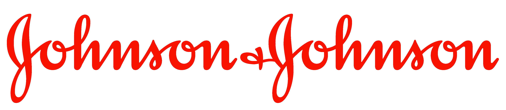
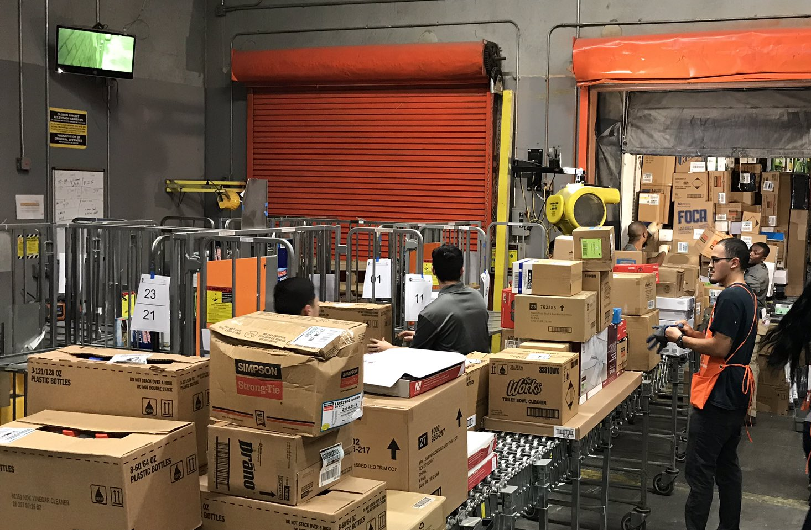
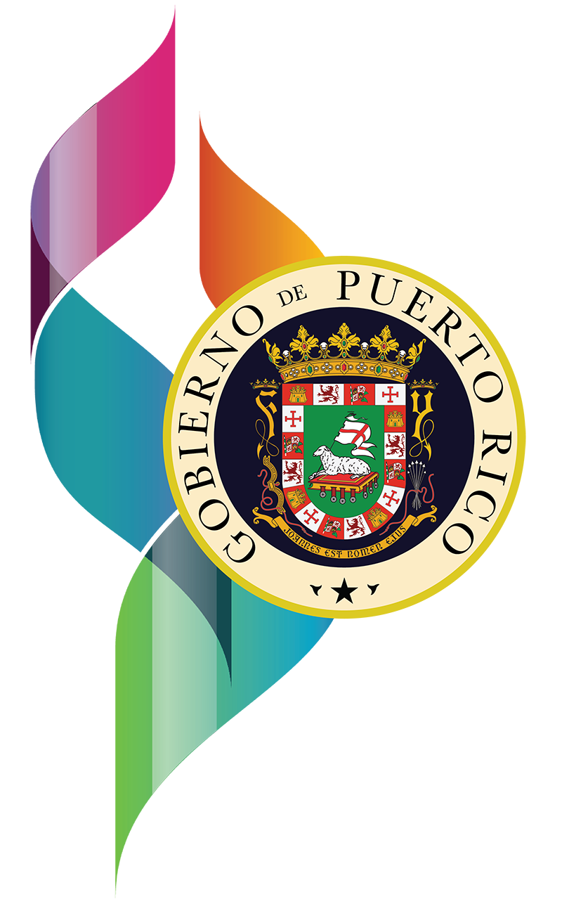
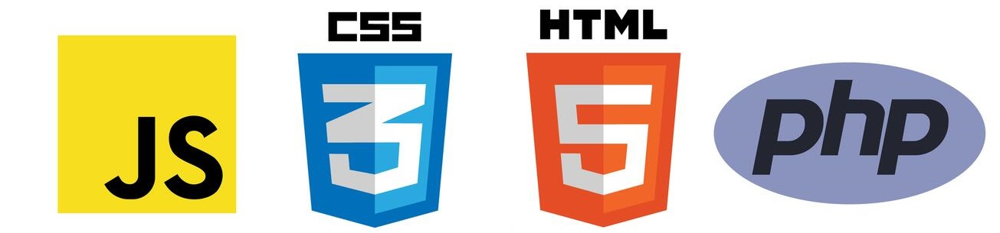

Timeline
Click a section to learn more about it
Start
2014
From a young age, I've been interested in anything math or science related. In fact, I would always tell people that I wanted to be a scientist. Later on I narrowed down my interests to engineering because technology became a huge passion of mine. I always worked very hard in school with the goal of being accepted into a good university and I managed to graduate with a 4.0 GPA. I had done some programming by this time but it was just a hobby.
2014
Accepted into The University of Puerto Rico: Mayaguez
Mechanical Engineering
The University of Puerto Rico at Mayaguez was my university of choice because of its reputation with engineering. I chose mechanical engineering because I've enjoyed physics, mathematics, and machines for as long as I can remember. Even though software wasn't my major, it was still something that I kept working on because I enjoyed it.
2018
American Institute of Aeronautics and Astronautics: UPRM
Flight Simulator Team Researcher

Image Source: Wikipedia
During my mechanical engineering degree, I looked for opportunities outside of regular coursework and I was accepted into my university's division of the American Institute of Aeronautics and Astronautics. They chose me because not only was I a mechanical engineering student, I also had a background with software. My role was to write simulation software to obtain data for the stability and workspace of Gough Stewart Platforms. I wrote a research paper as part of this research which was then going to be the basis for their flight simulator design. I also did fundraising by presenting my findings to several aerospace companies on the island and attracting them as sponsors. This was the first time that what I considered a hobby had led to a great opportunity and great success and I learned how useful software was in fields that were not necessarily based on it.
2020
Johnson and Johnson
Capstone Project

Image Source: Peak Scientific
As part of my mechanical engineering capstone project, I was fortunate enough to do a project in Johnson & Johnson of Añasco, PR. The project was about costs reduction. As part of the design, PSA (Pressure Swing Adsorption) technology was utilized in order to filter excess compressed air and generate a large portion of the required nitrogen gas necessary for various operations.
2020
Bachelor of Science in Mechanical Engineering
Magna Cum Laude
I graduated from mechanical engineering with honors in 2020. As was the case for a lot of people, this year came with a lot of challenges because of the pandemic. Because of personal reasons, I had to change certain plans and this led to me making the decision to apply for a second engineering degree, this time in software engineering. Because it is another engineering branch, I had many of the credits already so it wouldn't take much longer to finish it.
2020
Accepted into The University of Puerto Rico: Mayaguez
Software Engineering
I was accepted back into The University of Puerto Rico at Mayaguez in order to finish my second degree. I was very excited to see what this chapter of my life had in store for me.
2020
The Home Depot
Freight Team Associate

In order to support myself through this second degree, I got a job at The Home Depot working freight. Even though this job did not have much to do with engineering, I learned a lot from it. I learned more about teamwork, communication, time management, and many other topics that are relevant to all careers.
2021
The Department of Economic Development and Commerce
Web Development Intern

One of my first big breaks in software was an internship with The Department of Economic Development and Commerce. There, I was asked by the OGPe agency to work on web development, something that I had never done before. At the time, a temporary website was being created to be used while an entirely new platform was being developed. At that time they were utilizing Wordpress but there were certain functionalities needed that they could not obtain so I was asked to step in to fill those gaps. My work mostly consisted of creating and maintaining php plugins for functionalities used by the website's thousands of users. These plugins also had to have administrative tools that were easy to use and secure so that agency employees with limited tech knowledge could modify the content. I learned about html, css, javascript, php, as well as topics such as databases and cybersecurity.
2022
Honeywell Aerospace
Platform COE Software Engineering Intern
I spent the summer as a Platform COE intern at Honeywell Labs in Moca, PR where I worked on software for embedded systems. I created and documented tools for performance metrics acquisition and testing.
2023
Bachelor of Science in Software Engineering
Work In Progress...
I am expected to graduate from software engineering in May 2023. A notable achievement was being selected and participating as a student mentor for advanced programming students. I love teaching and helping others work through problems so I enjoyed my time there.
2023
To be continued...
I'm excited to see where this goes!